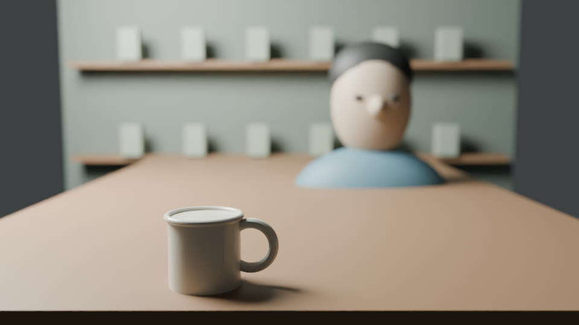
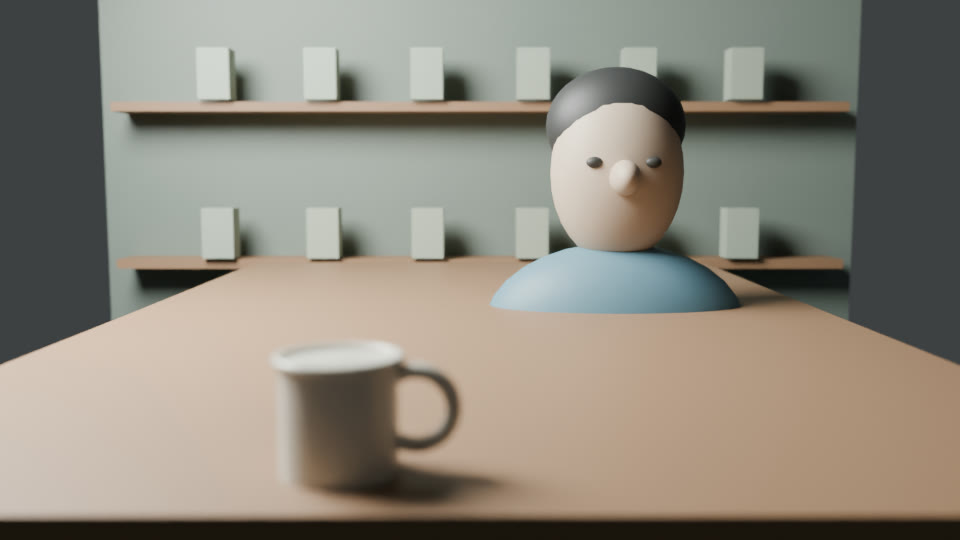

E02 / 6초 영상 A/B
컵에서 눈으로 초점을 인계하다
바꿀 것 · 초점 대상과 전환 시점


3D 대역의 초점 거리만 바꾼 설계도. 실제 Claire 영상이나 생성 모델의 랙 포커스 재현 검증이 아니다.
슬라이더는 세 장의 설계 프레임을 바꿉니다. 연속 영상 재생이나 실제 모델 출력이 아닙니다. A는6초 내내 컵 초점을 유지하는 계획입니다.
같게 유지할 것
- 같은 시작 스틸
- 같은 카메라·구도·광원·노출
- 컵·배우·손 위치
- 같은 자연스러운 작은 호흡·깜빡임
박자와 소리
- 0–2초: A/B 모두 컵에 초점
- 2–3초: B만 눈으로 한 번 초점 이동
- 3–6초: A는 컵, B는 눈에 유지
각 테이크 고유의 작업실 환경음·호흡. 대사·음악·강조 효과음 없음.
실제 결과의 통과 기준
- B에서 컵 선명도는 낮아지고 눈 선명도는 높아지며 A는 컵 초점을 유지
- 얼굴이 선명해지는 순간에도 참조 인물 유지
- 고정 배경의 위치가 프레임 폭의 약2% 이상 떠돌거나 줌·컷으로 차이를 만들면 보완
- 390px 화면에서도 초점 대상의 차이를 구별할 수 있음
스틸·영상 생성 입력안 보기
스틸 · E02-scene
A photographed live-action frame for a controlled lighting or focus study. Preserve the adult Korean woman in reference image1: the same face, age impression, black hair and bangs, earrings and recognizable proportions. Natural unretouched skin at this viewing distance, ordinary lip texture, stray hairs and believable cloth; no facial reshaping or artificial pore pattern. No readable text, logos or camera equipment in frame. A fixed medium view across a quiet workshop tea counter. Claire sits on the right third, facing and looking at the actual camera lens, lips relaxed and closed, with both hands below frame. She wears her blue-gray shirt. One plain cream ceramic cup sits stationary in the lower-left foreground, roughly1m from the camera; its entire rim and handle remain inside frame with space below its base. Claire is about2.4m away. Eye-level camera with a slight downward framing bias,35mm lens look,16:9. The cup rim and handle are crisp; Claire is softly out of focus but her identity and head shape are still recognizable. One soft window is the key, and distant shelves remain quiet shapes. The cup and Claire occupy different depth planes. No steam, pouring or extra objects.
영상 · E02-a
One continuous six-second photographic live-action shot beginning at the supplied first frame. Preserve the scene, identity, wardrobe, cup or umbrella geometry, framing, light and exposure except for the explicitly tested variable. The camera is physically locked: no dolly, pan, zoom, cuts, reframing or stabilization warp. Claire looks at the actual stationary lens, breathes naturally and makes brief natural blinks; no speech or mouthing words. No music, text or added person. Hold focus on the foreground cup rim and handle for all six seconds. Claire remains softly out of focus behind it. The cup and hands do not move. Maintain the original focus and depth relationships. Native sound recorded for this take: low workshop room tone and ordinary quiet breathing, no focus-motor cue or dramatic accent.
영상 · E02-b
One continuous six-second photographic live-action shot beginning at the supplied first frame. Preserve the scene, identity, wardrobe, cup or umbrella geometry, framing, light and exposure except for the explicitly tested variable. The camera is physically locked: no dolly, pan, zoom, cuts, reframing or stabilization warp. Claire looks at the actual stationary lens, breathes naturally and makes brief natural blinks; no speech or mouthing words. No music, text or added person. Seconds0–2: hold focus on the cup rim and handle, with Claire softly out of focus. Seconds2–3: make one smooth focus pull from the stationary cup to Claire’s eyes. Seconds3–6: hold her eyes and face sharp while the cup becomes soft; preserve her facial identity as it resolves. The change is optical focus only: no object moves, no face morph and no camera move. Native sound recorded for this take: low workshop room tone and ordinary quiet breathing, no focus-motor cue or dramatic accent.
PromptWise 원문을 이번 비교에 맞게 변형했습니다. PW-018-p12 보관 블록 ↗